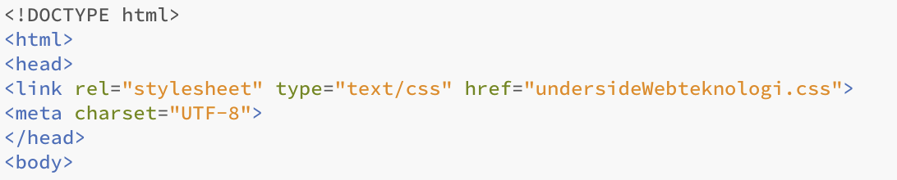
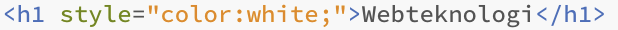
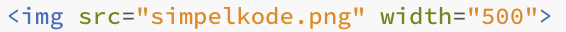
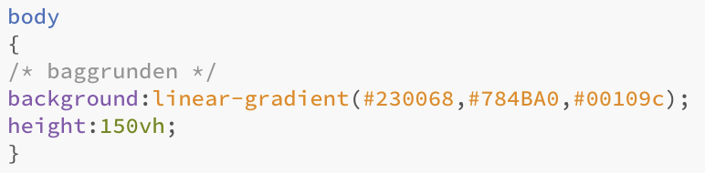
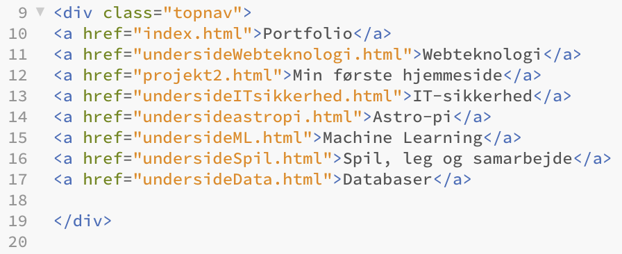

I forløbet om webteknologier havde vi til formål at udarbejde vores egen hjemmeside i programmeringssproget html og css. Denne hjemmeside skulle senere hen fungere som vores portfolie for de kommende forløb for resten af året i informatik.Helt i starten af forløbet udarbejdede jeg som træning i programmeringssproget en anden hjemmeside. Denne kan findes under "Min første hjemmeside" i topbaren.
Herunder vil der være eksempler og tilsvarende dokumentation på kode brugt i forløbet omhandlende webteknologier. Helt grundlæggende kan den simpleste html-hjemmeside opsættes på følgende måde:
Øverst i DOCTYPE-kommandoen er angivet til browseren hvilken dokumenttype der skal anvendes. Efterfølgende er angiver html-kommandoen at alt der skrives indenfor området skal være i den givne dokumenttype. Denne afslutees helt til sidst igen. Alt der omsluttes af head-kommandoen er det som ikke skal kunne ses på hjemmesiden, men herimod vigtig information som browseren skal kunne læse. På denne hjemmeside er f.eks. angivet at filen er tilknyttet en underside med navnet undersideWebteknologi.css. Her henvises der altså til en css-fil, hvor selve stylingen af hjemmesiden foregår. For at browseren kan læse bogstaverne æ, ø og å, er det også essentielt at sætningen lige under er angivet. Herefter starter body delen. Kode omsluttet af body-kommandoen er alt det som vi gerne vil have vist hjemmesiden, herunder overskrifter, paragrafer (som denne), billeder osv.
På billedet ses hvordan tekst, herunder overskrifter, paragrafer osv, nemt kan indsættes på hjemmesiden med simpel kode. Først angives hvilken type tekst der skal anvendes, f.eks. p=paragraf, h1=overksrift 1 osv. Som alt andet skal kommandoen efter tekststykket igen afsluttes. Ved kommandoen style kan farven på teksten også ændres, som det ses på billedet herunder:
For at indsætte billeder kan koden på billedet herunder benyttes. Ved at lægge det ønskede billede i samme fil som din html-fil, kan blot filnavnet + filtypen skrives, som det også ses. Yderligere kan størrelsen på billedet angives med kommandoen width:
Mere "kompliceret" grafisk kode laves i en separat css-fil tilknyttet html-filen (som skrevet i øverste afsnit). Når vi f.eks. ønsker en baggrundsfarve kan denne indsættes ved først at definere hvilket område farven skal dække. I eksemplet herunder er f.eks. angivet at farven skal dække hele body. Farverne er angivet i en analog formel, hvor farver fra et farvehjul bruges. Den ønskede farve skal derfor angives i sin kodeform som det også ses. I dette eksempel er angivet 3 forskellige farver, og at de alle skal fade ud med hinanden med kommandoen grabiet:
Selve denne hjemmeside styres ved hjælp af en topnavigationsbar med links til alle undersider på hjemmesiden. Navigationsbaren er først lavet i html, hvorefter den er designet i css. Her kombineres de 2 sprog altså. I html-kodedelen startes der ud med "div"-kommandoen, som angiver at et nyt design på hjemmesiden starter. Herefter defineres det ved brug af "class"-kommandoen at designet skal være en "topnav" (topnavigationsbar). De forskellige undersider der i topbaren henvises til starter ud med "a", efterfulgt af href="#". Sidstnævnte bestemmer hvilket html-dokument der skal henvises til når man trykker på den angivne teks i topbaren. I de følgende linjer er altså henvist til links til alle undersiderne på denne hjemmeside. Til sidst lukkes vores "div"-kommando af igen, og et nyt design påbegyndes. HTML-koden ses herunder:
Selve stylingen af topbaren er som sagt skrevet i det css-dokument der tideligere blev henvist til (forklaret under "dokumentation af kode"). Først angives det med ".topnav" at vi ønsker at redigere i vores topnavigationsbar. På næste linje (11) sikres det, at selv når hjemmesiden åbnes på en skærm i et andet format skal referencerne tilpasse sig denne skærm. Herefter defineres baggrundsfarven til "black".
I næste del af koden angiver vi ved ".topnav a", at hver enkel boks i topbaren skal designes nu. a var jo netop det vi navngav hver af vores bokse i html-koden. Ønskede vi i stedet et individuelt design til hver boks kunne vi have navngivet dem hver især. Herunder er forklaret hver linje grundigt i koden:
- Linje 15: Det er bestemt at topbaren skal holde til venstre på siden
- Linje 16: Boksene i baren skal vises som blokke
- Linje 17: Farven når musen holdes over boksene er sat til beige
- Linje 18: Størrelsen på boksene er bestemt til en antal pixels
- Linje 19: Skriftstørrelsen er angivet til 18 pixels
- Linje 20: Det er bestemt at der ingen tekstdekoration skal være
- Linje 22: Det angives at der nu arbejdes på topbarens hover, altså funktionen som gør at boksene skifter farve når musen holdes over
- Linje 23: Baggrundsfarven på boksen sættes til farvekoden #ddd, som er beige, når musen holdes over
- Linje 24: Boksens farve sættes til sort når musen ikke holdes over